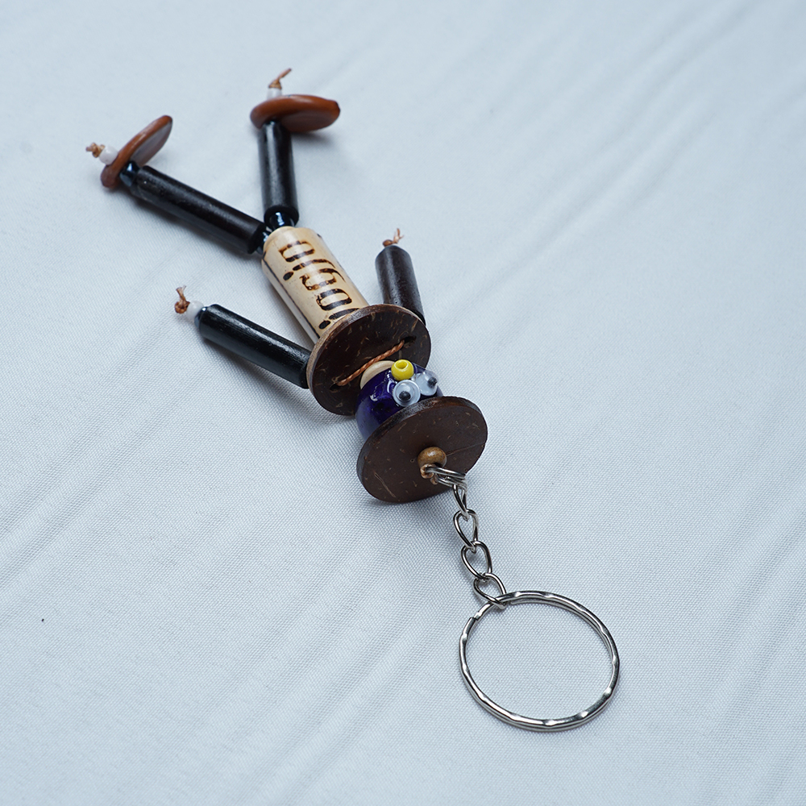

Kerajinan Keranjang dan Gantungan Kunci

Keranjang dari bambu merupakan salah satu produk yang dihasilkan oleh penduduk Desa Kebonsari. Keranjang bambu ini hadir dalam beberapa ukuran, di mana yang kecil seringkali dipakai sebagai tempat menyimpan gula semut. Untuk pembuatan keranjang bambu, biasanya menggunakan bambu apus. Adapun gantungan kunci, model atau bentuknya cenderung disesuaikan dengan minat pasar. Bambu ampel adalah jenis bambu yang sering digunakan dalam pembuatan gantungan kunci tersebut.
Pelaku UMKM
Klik untuk melihat lokasi pelaku UMKM